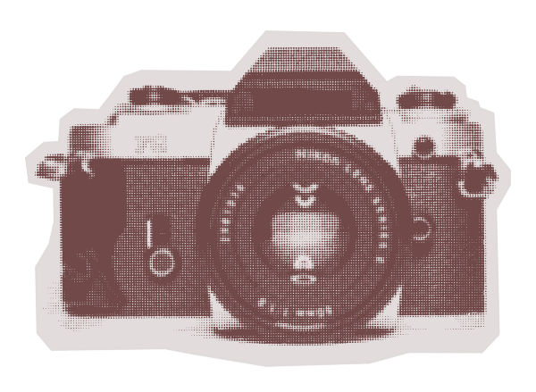
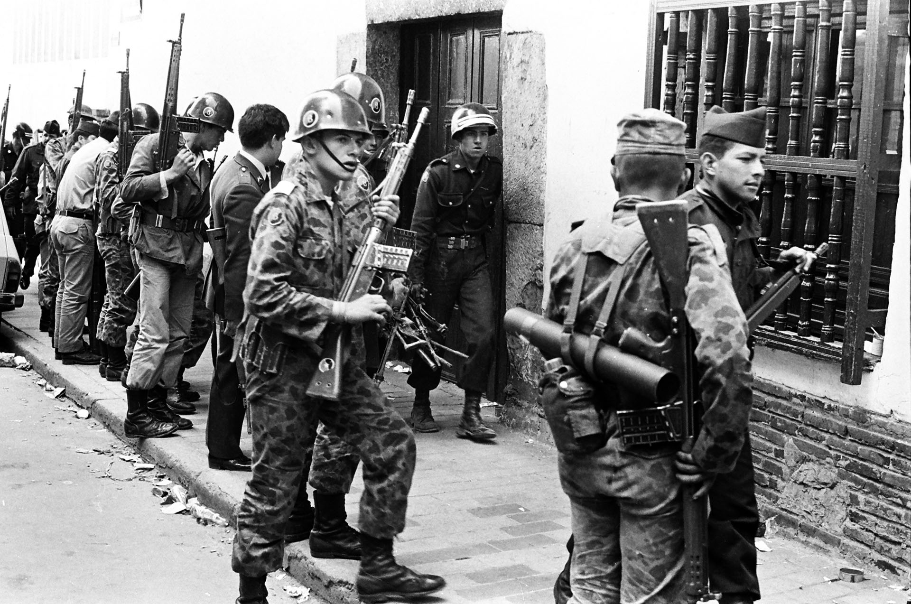
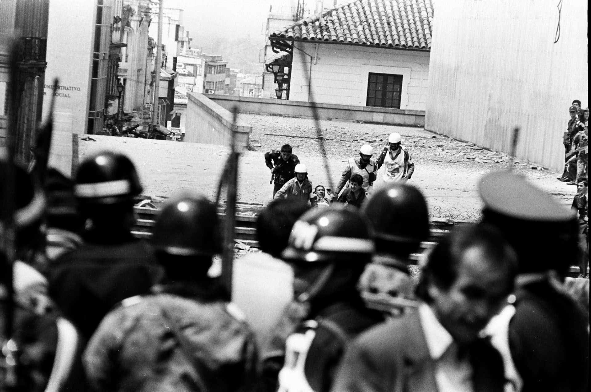
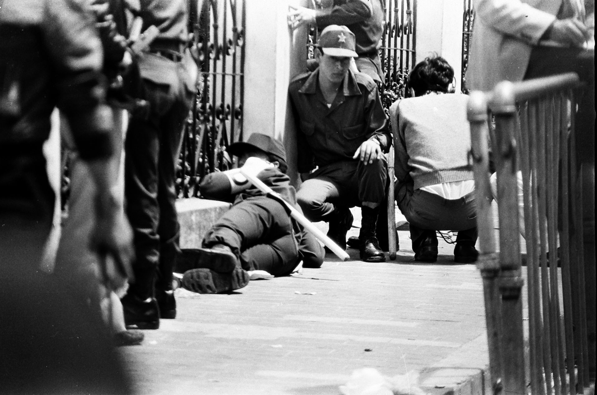
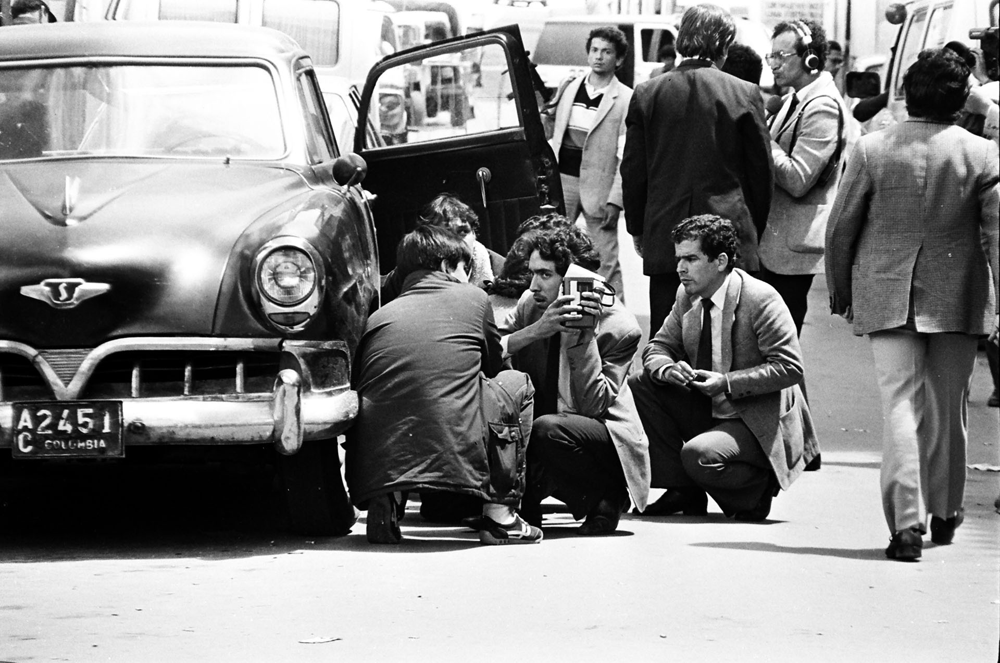
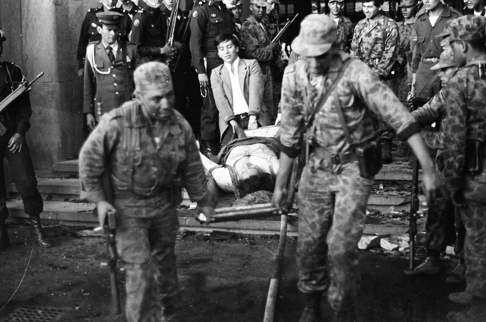
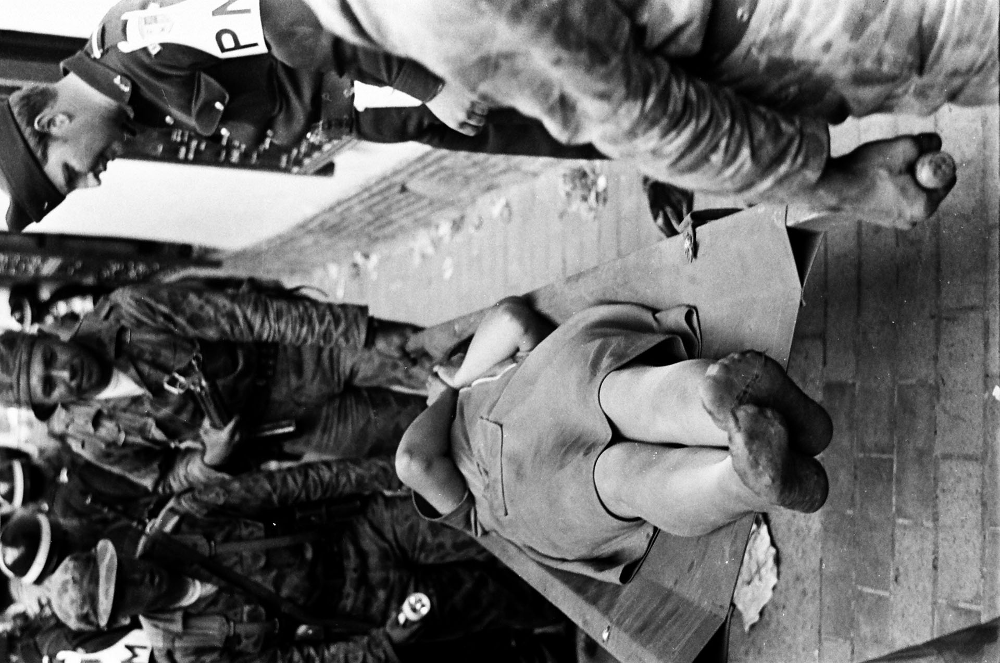
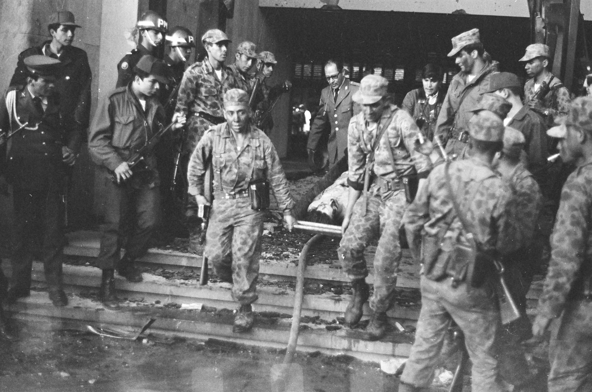
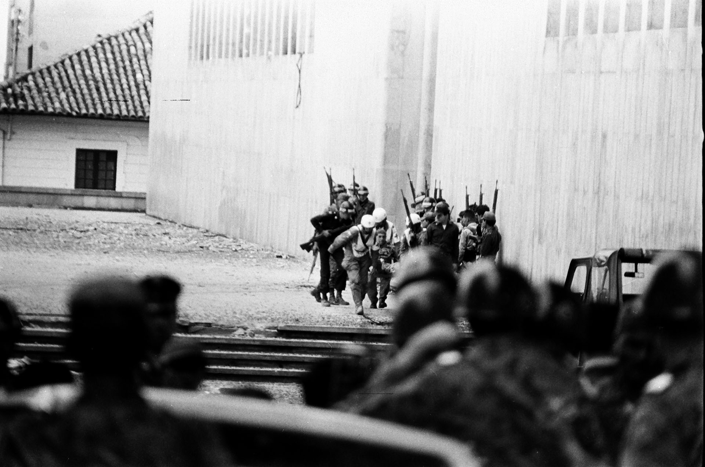

Galería
Este archivo fotográfico agrupa las huellas visuales de uno de los momentos más aflictivos de la historia colombiana. Se trata de un espacio donde las imágenes no solo preservan la memoria, sino que ofrecen una mirada cercana y sensible de los hechos, invitándonos a recordar, cuestionar y repensar.
Nota ➜ El material audiovisual recopilado pertenece a sus respectivos autores y fuentes, quienes conservan los derechos sobre las obras aquí presentadas.








